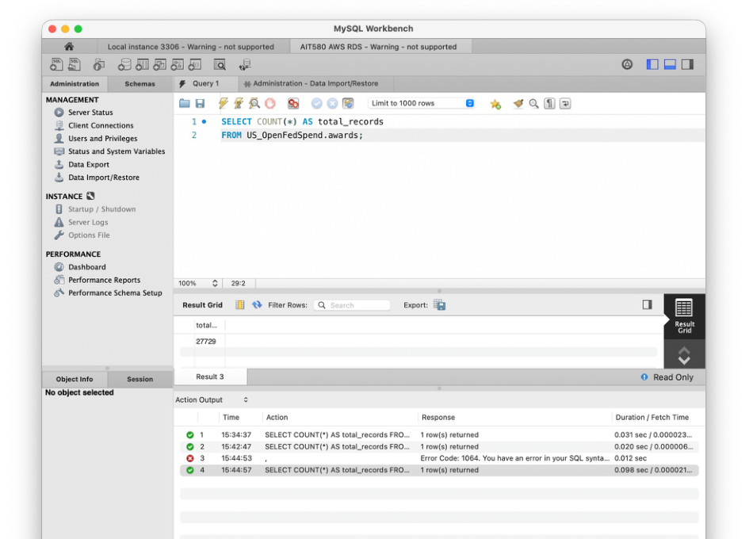
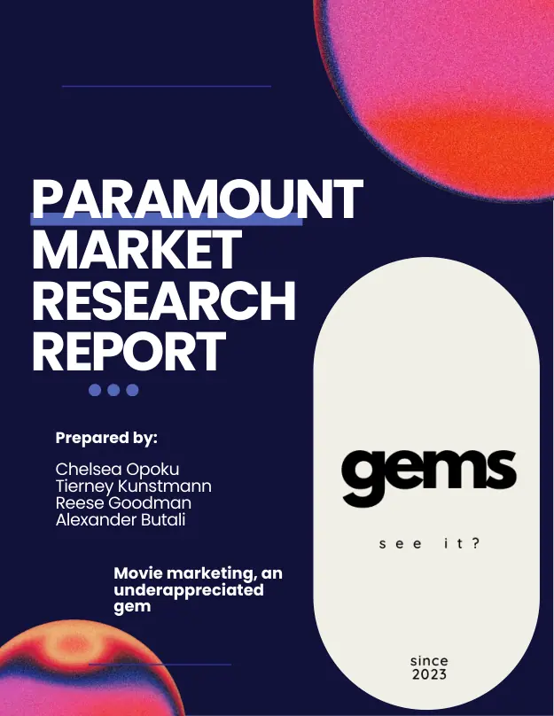
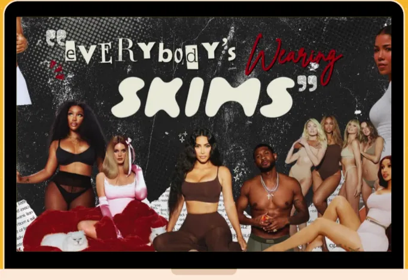
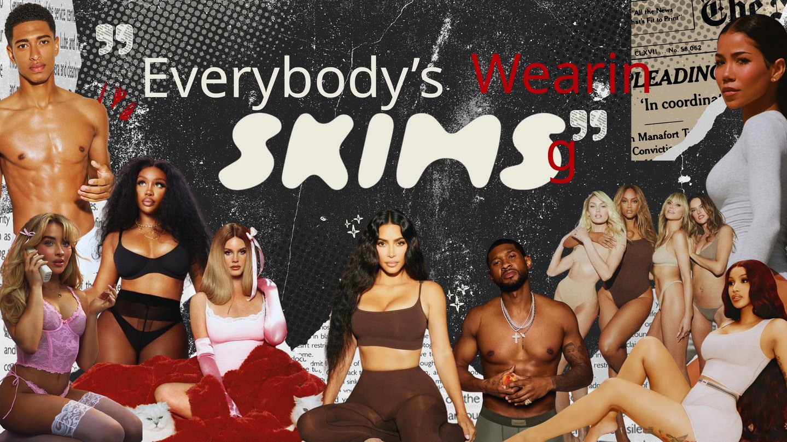
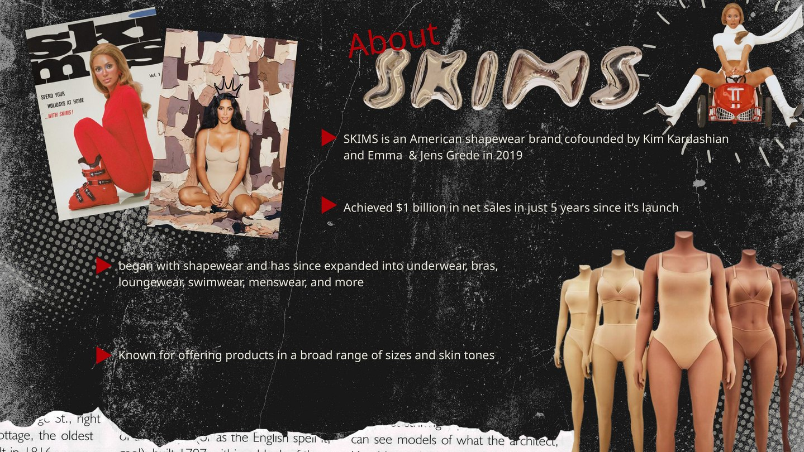
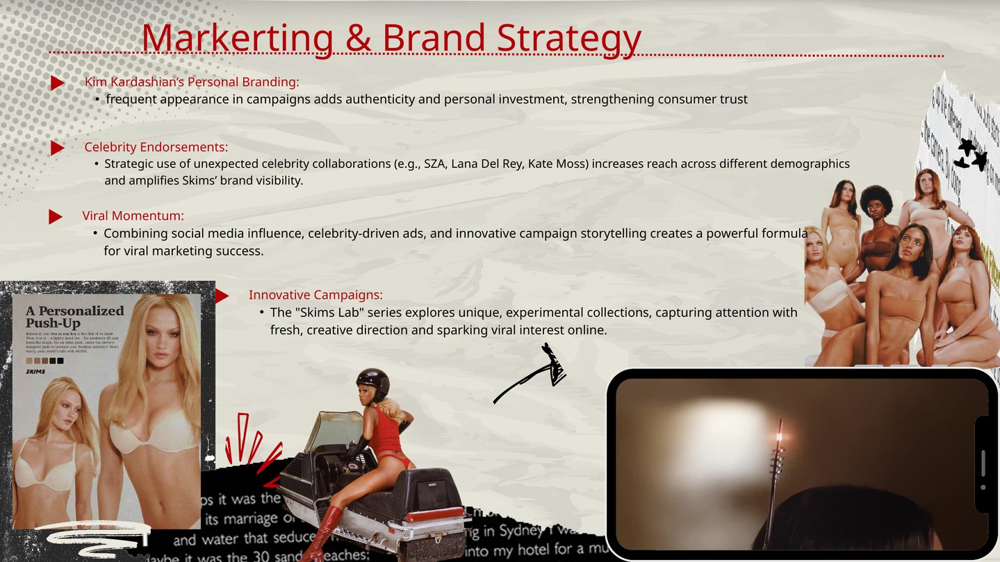
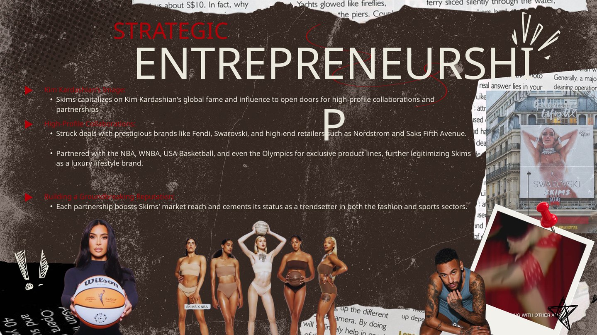
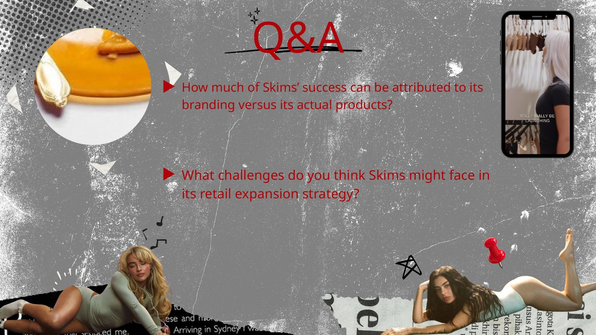
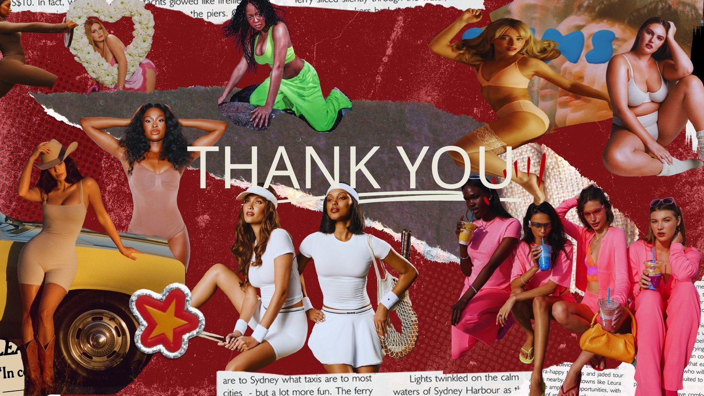
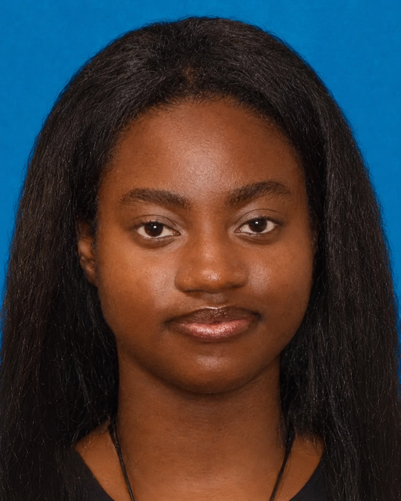

I'm interested in the stories behind the numbers—and how to make those insights useful.
Hey, I'm Chelsea! My background is in marketing and consumer research, but I've always been drawn to the analytical side of things. Now I'm pursuing my M.S. in Data Analytics Engineering at George Mason University, where I'm building on that foundation with Python, SQL, R, and cloud technologies.
01 / ExplorePython · SQL · R · Excel · Tableau · AWSVirginia, USA ✳
01 — Selected work
Work worth exploring.
These are some of the projects I've enjoyed working on, from cleaning datasets and building dashboards to exploring questions about people, business, and the decisions we make.
U.S. federal award records · 2026 snapshot
27,729
Featured case study
Data analytics · Python / R / SQL / AWS
Patterns in U.S. Federal Contract Awards
I worked with over 27,000 federal award records to explore agency activity, award amounts, and contract lengths, then brought the data into SQL and AWS.
Understanding patterns in federal contract awards.
I started with a saved seven-day snapshot of federal contract awards from Open FedSpend, using data originally sourced from USAspending.gov. I wanted to understand which agencies appeared most often, how award amounts varied, and what the contract dates and durations could tell me. Because this was just a snapshot, I treated the results as a look at this specific dataset—not a picture of long-term federal spending.
27,729award records in snapshot
57awarding agencies in CLI summary
$2,515approx. median award value
Award counts by awarding agency
Top 10 agencies · record frequency
General Services Administration
16,561
Veterans Affairs
1,876
Justice
1,472
Homeland Security
1,434
Health and Human Services
1,318
Interior
972
Agriculture
721
Transportation
660
State
532
Commerce
420
Counts are taken from the original command-line frequency output. They describe record frequency, not total dollars obligated by each agency.
Contract duration
Short (≤ 5 years)26,995
Medium (5–10 years)639
Long (> 10 years)94
R/CLI categorization; 1 record lacks a usable date.
Distribution matters.
$16.79M
mean award amount
$43.2B
approximately the maximum observed award
A small number of very large awards pull the mean far above the median. Values reflect this snapshot.
What I learned
One thing that stood out to me was just how misleading an average can be when a few award amounts are exceptionally large. I also learned why the preparation matters as much as the charts: missing values, dates, and duplicate IDs all needed attention. I worked through those issues using Python, R, SQL, and command-line tools, then moved the records into MySQL on AWS RDS and checked that the full row count transferred successfully.

Original evidence from the AWS RDS exercise: row count verified against the local dataset.
Method note: The dataset is a time-limited snapshot; the distributions do not describe all U.S. federal contracts. Separate course assignments used slightly different duration thresholds, so this figure follows the reported R/CLI categorization.
Case study 02 / R · Survey analysis
How does work arrangement relate to employee well-being?
I was curious whether employees working remotely, onsite, or in a hybrid arrangement reported noticeably different experiences. Using a 2025 remote-work survey dataset, I cleaned and recoded variables in R, created workload categories, and compared work-life balance, social isolation, and burnout through visualizations.
Average work-life balance scores
Reported in R script · scale of 1–5
Onsite
3.03
Remote
2.99
Hybrid
2.95
The average differences are small; no causal conclusion is implied.
High burnout by weekly workload
40 hours or less34.5%
Over 40 hours32.8%
Both groups reported similar burnout distributions; longer hours alone do not appear to explain burnout in this dataset.
Approach: Inspect variables and missingness, convert work arrangement and burnout to factors, derive a weekly-workload category, and visualize outcomes using ggplot2.
Interpretation: Work-life balance averages were similar; reported isolation appeared more differentiated by work arrangement, with remote workers generally higher in this dataset.
What customer characteristics appear alongside bike purchases?
This started as a question about who was buying bikes and whether the patterns differed across customer groups. I cleaned the data in Excel, used PivotTables and PivotCharts to compare income and age groups, and put the results into one dashboard so the patterns would be easier to see.
Original Excel dashboard provided from the workbook.
Skills demonstrated: cleaning worksheet data, generating pivot summaries, visual comparison, and presenting customer patterns in a compact dashboard. This is a descriptive analysis, not a causal model of purchases.
Case study 04 / MySQL · Data cleaning
Making a global layoffs dataset ready for analysis.
This project was all about the work that happens before you can trust a dataset. I started by creating a staging copy of the original World Layoffs table, then used SQL to work through duplicate records, inconsistent text, dates, and missing information.
Cleaning workflow: I used ROW_NUMBER() to identify and remove duplicate rows, trimmed company names, standardized country names, and converted dates into a proper SQL DATE type.
Handling missing data: I used matching company records to fill in missing industry values where possible, removed rows where both layoff measures were missing, and dropped the temporary duplicate-check column.
A look at the SQL
The duplicate-checking step used a window function to flag repeated records before I removed them from the staging table.
ROW_NUMBER() OVER ( PARTITION BY company, location, industry, total_laid_off, percentage_laid_off, `date`, stage, country, funds_raised_millions ) AS row_num
Final output: a cleaned table named layoffs_cleaned, with row-count, unique-company, and sample-record queries at the end of the script. This was a data-preparation project rather than a completed exploratory analysis, so I haven't added findings that aren't in the SQL file.
Case study 05 / Marketing research · Qualtrics · Excel
What actually gets people to the movies?
This was one of those projects where I got to bring my interest in consumer behavior into a real research process. As part of a four-person marketing research team, I explored a big question: how could Paramount improve its brand health and make its film promotions more meaningful to audiences?
We started with industry research, built a survey in Qualtrics, distributed it through CloudResearch Connect, and reviewed the responses in Excel. I contributed to the survey setup, the research and analysis, and how we organized the final report.
This was a 2023 university research project, not research commissioned by Paramount. The report reflects the team's work, with all original contributors credited in the PDF.

Our original 21-page research report.
50survey respondents
2023year of the research report
21 pagesoriginal report, charts & recommendations
01 / Ask the right questions
We explored how audiences respond to film promotions, what influences theater visits, and where Paramount might improve its marketing.
02 / Gather responses
Our team distributed a Qualtrics survey through CloudResearch Connect to 50 U.S.-targeted respondents.
03 / Turn responses into ideas
We analyzed individual responses and relationships between variables, then developed recommendations based on the patterns we observed.
What stood out to me: marketing isn't just about grabbing attention. It matters what people actually respond to, and that isn't always what a brand might assume.
A closer look at the findings
Visual spectacle
When respondents were asked what draws them to a theater, visually appealing movies stood out among the listed motivations (report pp. 16–17).
Word of mouth
Recommendations from other people and intriguing promotions both appeared in the responses, giving our team ideas for audience-focused campaigns (pp. 16–18).
Seasonal opportunities
Our team suggested stronger fall horror promotions and ticket incentives designed to encourage friends to see movies together (pp. 18–19).
These findings gave us a starting point for recommendations, not proof that any particular campaign would increase sales. With a relatively small survey sample, I would treat the results as directional rather than representative of every moviegoer.
The report is preserved as originally submitted, including its sources and team credits. Page 21 contains a Canva survey-copy link that no longer loads inside the original PDF.
Case study 06 / Tableau · Data storytelling
From Reel to Heart: telling a story with movie data.
I wanted this project to feel as fun to look at as it was to research. Using a selected IMDb romance-film list, I explored release patterns, ratings, run times, and awards in Tableau, then brought the charts together in Canva to tell a visual story.
Original completed infographic. Findings are specific to the selected IMDb list and its classifications.
03 — The creative side
Research with personality.
Before leaning further into analytics, I spent a lot of time working on marketing research, brand strategy, and creative projects. I still love that side of my work, and I think it's made me a stronger storyteller when it comes to data.

Brand strategy
SKIMS
I took a closer look at how SKIMS has used branding, partnerships, and positioning to grow.
For this independent strategy presentation, I wanted to take a closer look at how SKIMS became such a recognizable brand in a relatively short period of time. I focused on the branding choices, celebrity collaborations, and partnerships behind its expansion.
This was a brand strategy analysis, not a campaign I worked on for SKIMS. I built the presentation to explore what other businesses can learn from its approach to positioning, creative direction, and growth.
Personal branding
How the founder's public profile connects to brand visibility and credibility.
Partnerships
How collaborations with celebrities, retailers, and sports organizations expand reach.
Campaign strategy
How visual direction, social media, and viral momentum contribute to recognition.
The full six-slide presentation is also available to browse below, including the title, research, Q&A, and closing slides.
Browse all 6 original presentation slides

01 / Cover

02 / Brand overview

03 / Marketing & brand strategy

04 / Strategic entrepreneurship

05 / Discussion questions

06 / Closing

04 — A little about me
Curious by design.
I originally studied marketing because I loved learning about people—what influences their decisions, what catches their attention, and what makes a strategy work. Somewhere along the way, I realized that the research and analytics were the parts I enjoyed most. That's what led me to pursue my master's in Data Analytics Engineering at George Mason University.
I'm still exploring where I want to specialize, but I know I want to do work that involves asking good questions, making sense of data, and helping people make better-informed decisions. I enjoy the technical side, and I care just as much about being able to explain the results clearly.
Education George Mason University — M.S. Data Analytics Engineering, in progress Virginia Commonwealth University — B.S. Marketing, Analytics & Communication, 2024
Programming & data
Python · R · SQL · MySQL · pandas · JupyterLab · RStudio
AWS EC2 / S3 / RDS · data management · Qualtrics · consumer research
Portfolio metrics are reproduced from the supplied coursework and report files. Screenshots are from the original student work. Chart displays are rebuilt for the web.